EuroBioc2020
European Bioconductor meeting 2020
Last built: 2020-12-19 10:18:21
| Parameter | Value |
|---|---|
| hashtag | #EuroBioc2020 |
| start_day | 2020-12-14 |
| end_day | 2020-12-18 |
| timezone | Europe/Rome |
| theme | theme_light |
| accent | #0092AC |
| accent2 | #98C43D |
| kcore | 2 |
| topics_k | 6 |
| bigram_filter | 3 |
| fixed | TRUE |
| seed | 1 |
Introduction
An analysis of tweets for the query #EuroBioc2020 related to European Bioconductor meeting 2020 held virtually from 2020-12-14 to 2020-12-18. A total of 523 tweets from 210 users were collected using the {rtweet} R package.
1 Timeline
1.1 Tweets by day
1.2 Tweets by day and time
Filtered for dates 2020-12-14 - 2020-12-18 in the Europe/Rome timezone.
2 Users
2.1 Top tweeters
Overall
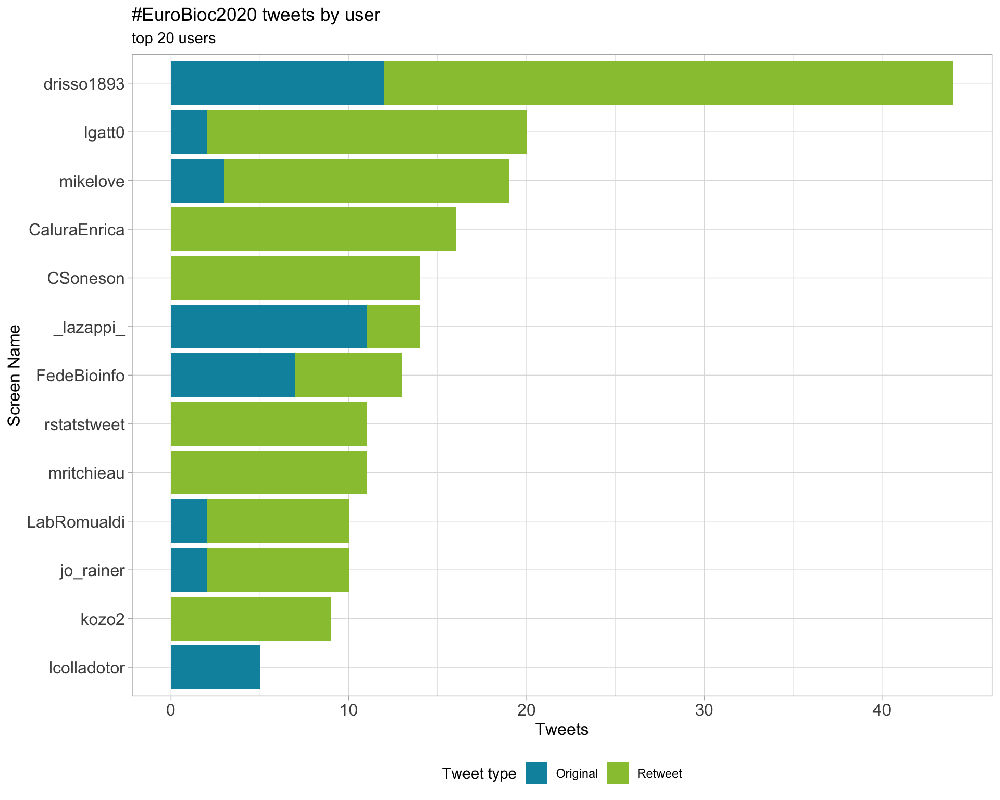
Original
Retweets
2.2 Retweet proportion
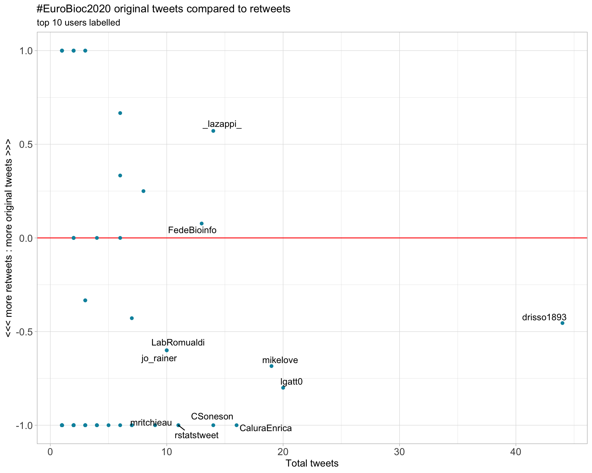
2.3 Top tweeters timeline
2.4 Top tweeters by day
Overall
Day 1
Day 2
Day 3
Day 4
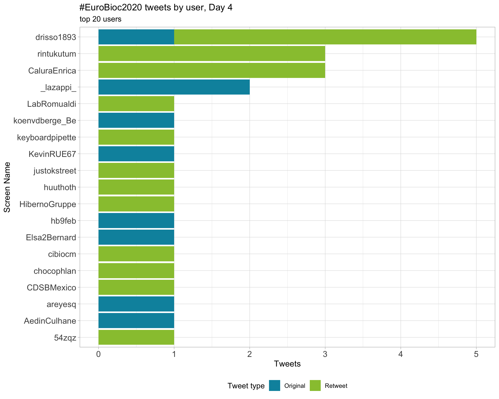
Day 5
Original
Day 1
Day 2
Day 3
Day 4
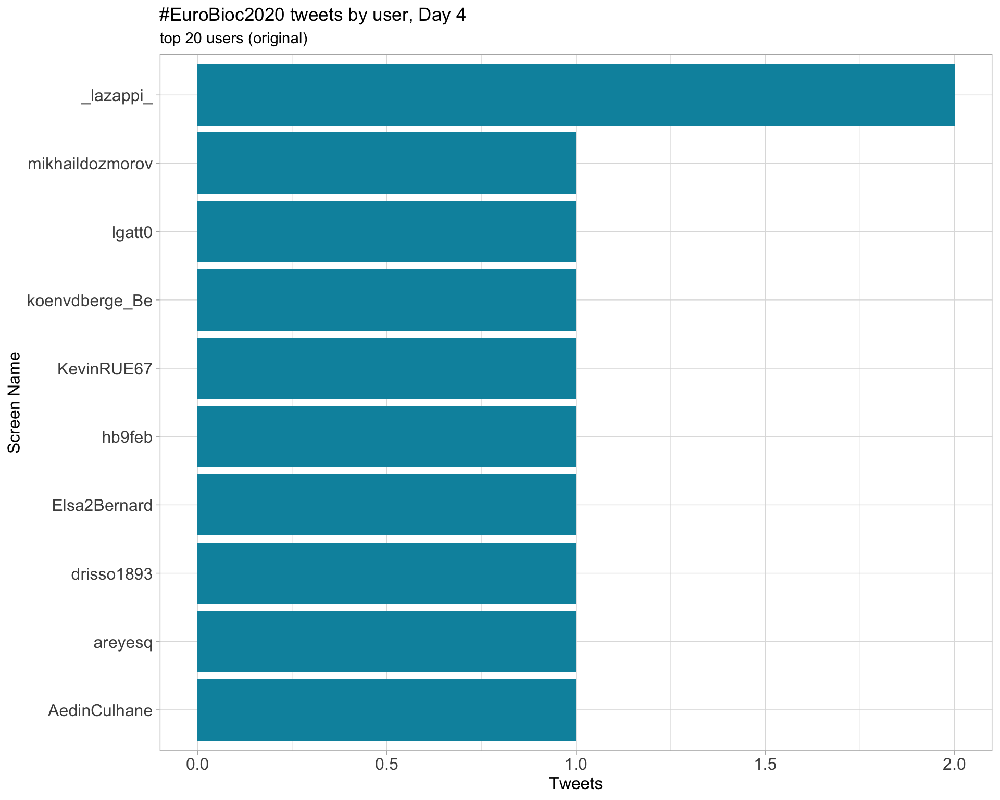
Day 5
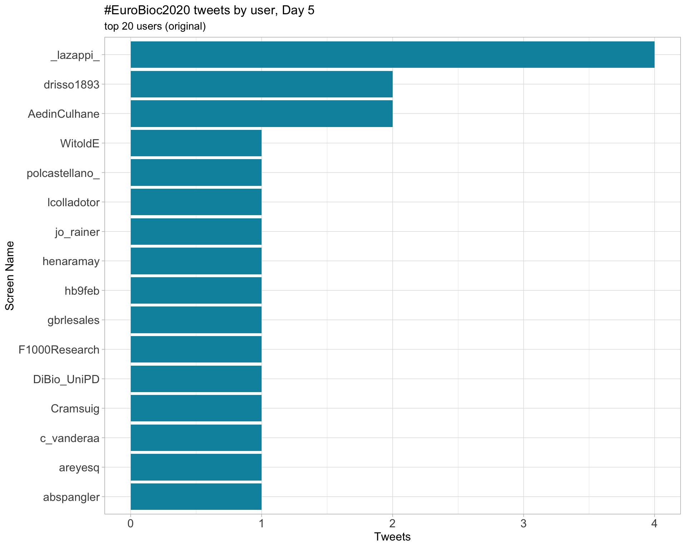
Retweets
Day 1
Day 2
Day 3
Day 4
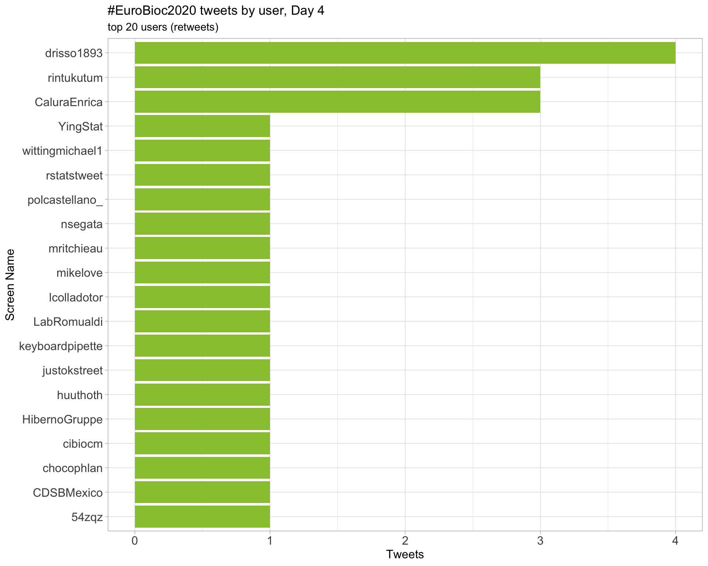
Day 5
3 Sources
Users
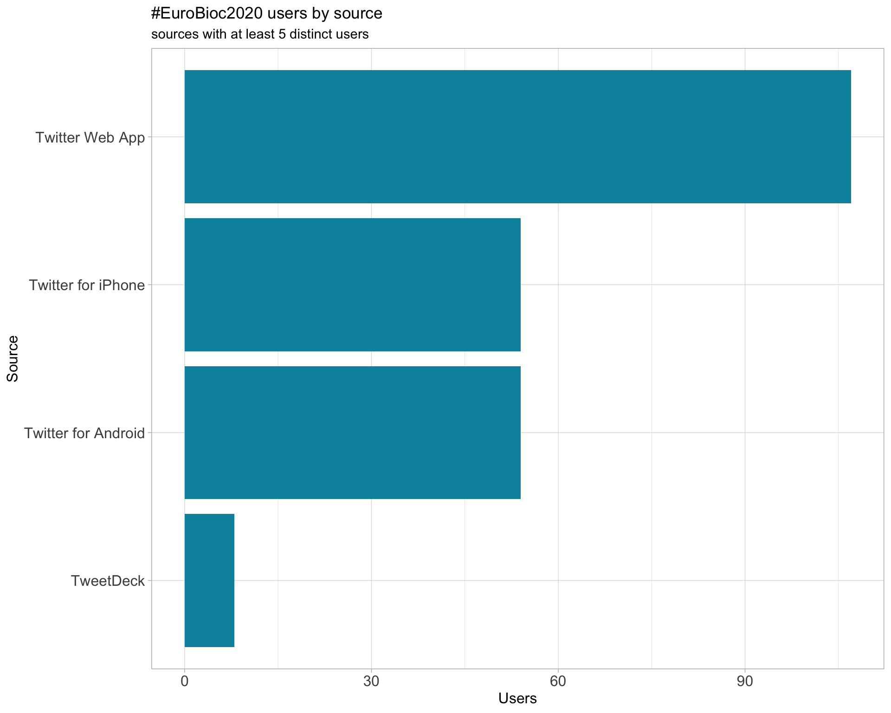
Tweets
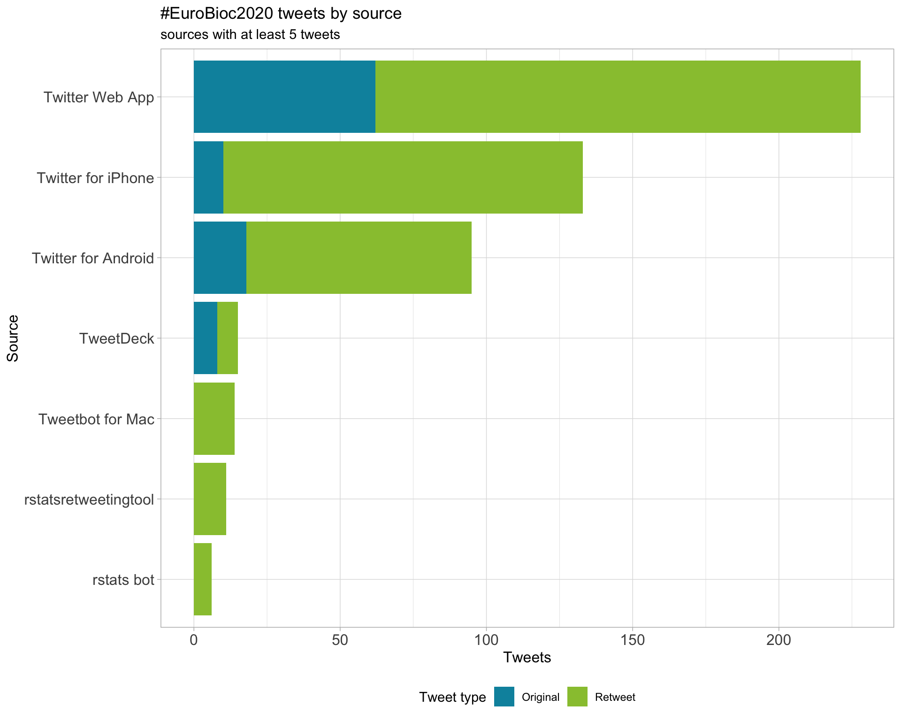
4 Networks
4.1 Replies
The “replies network”, composed from users who reply directly to one another, coloured by PageRank.
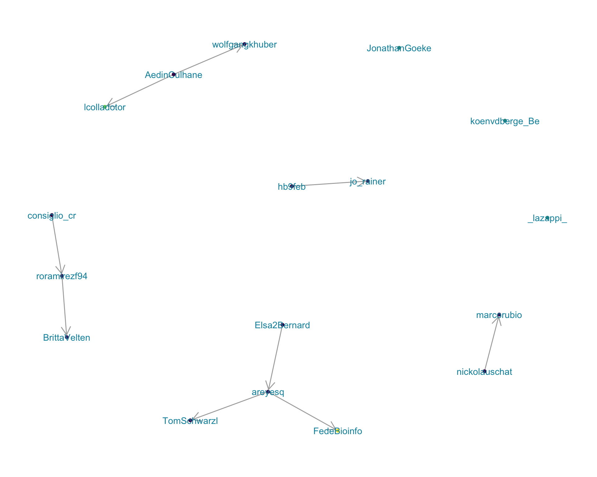
4.2 Mentions
The “mentions network”, where users mention other users in their tweets. Filtered for a k-core of 2. Node colour and size adjusted according to PageRank score.
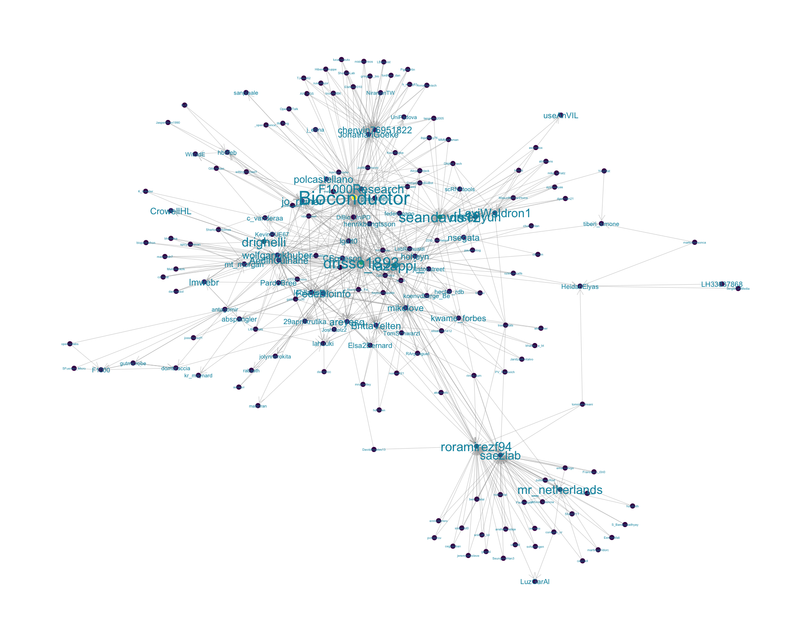
5 Tweet types
5.1 Retweets
Proportion
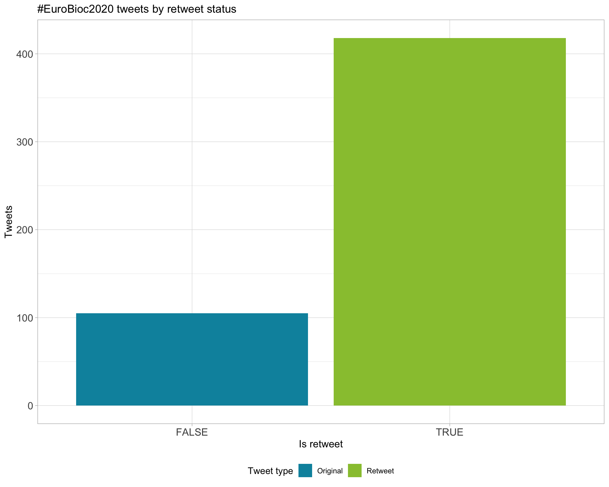
Count
Top 10
| screen_name | text | retweet_count |
|---|---|---|
| saezlab |
Today @roramirezf94 will present in #EuroBioc2020 our latest collective effort: decoupleR, an R package to systematically combine and evaluate regulatory networks and algorithms used for the estimation of TF activities from transcriptomics data. https://t.co/YwS1RNVnir https://t.co/xRc8jdO2LG |
28 |
| JonathanGoeke | The first long read RNA-Seq tool is now on @Bioconductor! @chenyin76951822 developed bambu for transcript discovery and quantification, she will present about her work today at #EuroBioc2020 https://t.co/7HD1JiWFmr | 23 |
| seandavis12 |
The workshops at #EuroBioc2020 will be running on a 120-node autoscaling cluster that works out to 480 cores, 23.4TB of shared disk, and 3.7TB of RAM. Everything autoscales (down to zero), so nothing is wasted when not in use. Thx to workshop authors! https://t.co/Uc5JiK2w6g |
19 |
| drisso1893 | Really excited to kick-off #rstats @Bioconductor’s #EuroBioc2020 virtual meeting in a little more than three hours! The first day is packed with great talks and discussions, including a state-of-the-project address by @mt_morgan and keynote addresses by @hoheyn and @drsehyun | 15 |
| drighelli |
If you‚Äôre interested in discussing Spatial Transcriptomics in Bioconductor join our BoF at 7pm (ITA time) at the #EuroBioc2020. Discover and contribute to our #BiocSpatialChallenges üöÄ With @lmwebr, @CrowellHL and @drisso1893 . https://t.co/tjlx3VUCB7 |
15 |
| AedinCulhane |
At #EuroBioc2020 @wolfgangkhuber recommends There is a large community to help. Reach out to the @Bioconductor community. Closing #EuroBioc2020 slides with links to resources at https://t.co/TTHnXBD4Wj Thanks organizers for a great meeting https://t.co/AVqU9R0ICq |
13 |
| seandavis12 |
Slides from the excellent talk from @drsehyun in @LeviWaldron1 group: “Bioinformatics On the Cloud: How to leverage cloud-based resources for your bioinformatics works” #EuroBioc2020 @useAnVIL #bioconductor #cloud #bioinformatics |
13 |
| drisso1893 | Thank you to all #EuroBioc2020 attendees, contributors, and organizers! This was the first time I organized a conference and now that it’s over I can say that it was A LOT of work but 100% worth it! So proud of being part of the amazing @Bioconductor community! https://t.co/HtW3k5aFBF | 12 |
| jo_rainer |
In my workshop at #EuroBioc2020 (Thursday) I will show how our #Spectra package can be used to compare experimental MS2 spectra to #MassBank - all from within #rstats. Hope to see you there! Workshop, docker image etc available here: https://t.co/ejj1kK7eAw |
12 |
| AedinCulhane |
@wolfgangkhuber praises and expressed our immense gratitude to @mt_morgan, who has been a phenomenal leader of @Bioconductor at #EuroBioc2020. THANK YOU MARTIN https://t.co/F25r1Lg2qy |
12 |
Most retweeted
5.2 Likes
Proportion
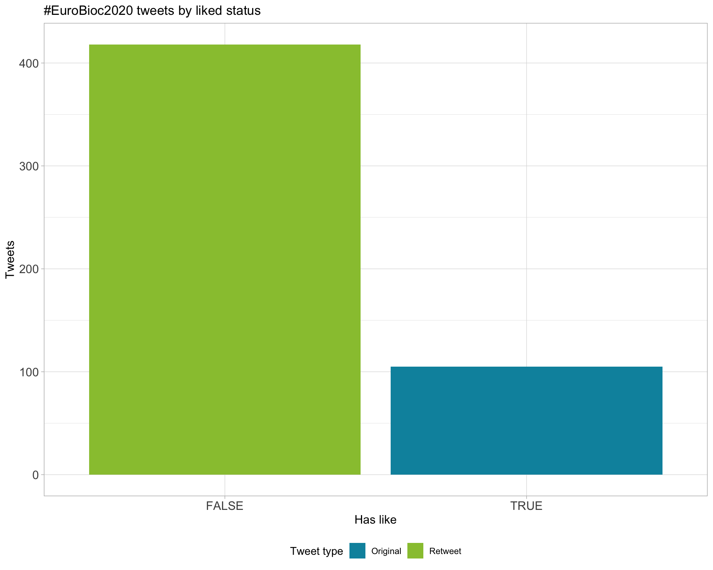
Count
Top 10
| screen_name | text | favorite_count |
|---|---|---|
| saezlab |
Today @roramirezf94 will present in #EuroBioc2020 our latest collective effort: decoupleR, an R package to systematically combine and evaluate regulatory networks and algorithms used for the estimation of TF activities from transcriptomics data. https://t.co/YwS1RNVnir https://t.co/xRc8jdO2LG |
84 |
| JonathanGoeke | The first long read RNA-Seq tool is now on @Bioconductor! @chenyin76951822 developed bambu for transcript discovery and quantification, she will present about her work today at #EuroBioc2020 https://t.co/7HD1JiWFmr | 83 |
| seandavis12 |
The workshops at #EuroBioc2020 will be running on a 120-node autoscaling cluster that works out to 480 cores, 23.4TB of shared disk, and 3.7TB of RAM. Everything autoscales (down to zero), so nothing is wasted when not in use. Thx to workshop authors! https://t.co/Uc5JiK2w6g |
71 |
| mikelove | Awesome to see @kwame_forbes presenting his post-bac project at #EuroBioc2020! He is working on functions to help biologists explore their bulk results alongside publicly available and preprocessed scRNA-seq data https://t.co/qzT7NuFP4r | 61 |
| lazappi | “Integrative Analysis of Multiomics Data” @BrittaVelten #EuroBioc2020 #Sketchnotes https://t.co/uugc3y59jd | 53 |
| HeidariElyas |
Looking forward to present #scGCN for the first time in #EuroBioc2020. registered + interested in employing Gene (Regulatory?) Networks as an inductive bias in your single-cell classifiers? join us on 16.12! An exciting collaboration with Shayan Shekarforoosh and @LH33837868. https://t.co/6Uz3QYXKm5 |
47 |
| PardoBree | Today I gave my first talk at a congress in #EuroBioc2020 about our work on adapting the package #spatialLIBD to use VisiumExperiment objects. https://t.co/U23yE32RWM | 46 |
| drisso1893 | Thank you to all #EuroBioc2020 attendees, contributors, and organizers! This was the first time I organized a conference and now that it’s over I can say that it was A LOT of work but 100% worth it! So proud of being part of the amazing @Bioconductor community! https://t.co/HtW3k5aFBF | 45 |
| lazappi | Self #sketchnotes from my #EuroBioc2020 talk https://t.co/dP5uyFa9iX | 41 |
| polcastellano_ |
ü§îDo you want to know more about statistical analysis tools for #masspec data? I will be presenting the POMA package next Friday 18th at the @Bioconductor European meeting 2020 #EuroBioc2020 ‚û°Ô∏èDon‚Äôt miss it‚ĺÔ∏è #metabolomics #proteomics #bioinformatics @sanplaale @NutriMetabolom |
38 |
Most likes
5.3 Quotes
Proportion
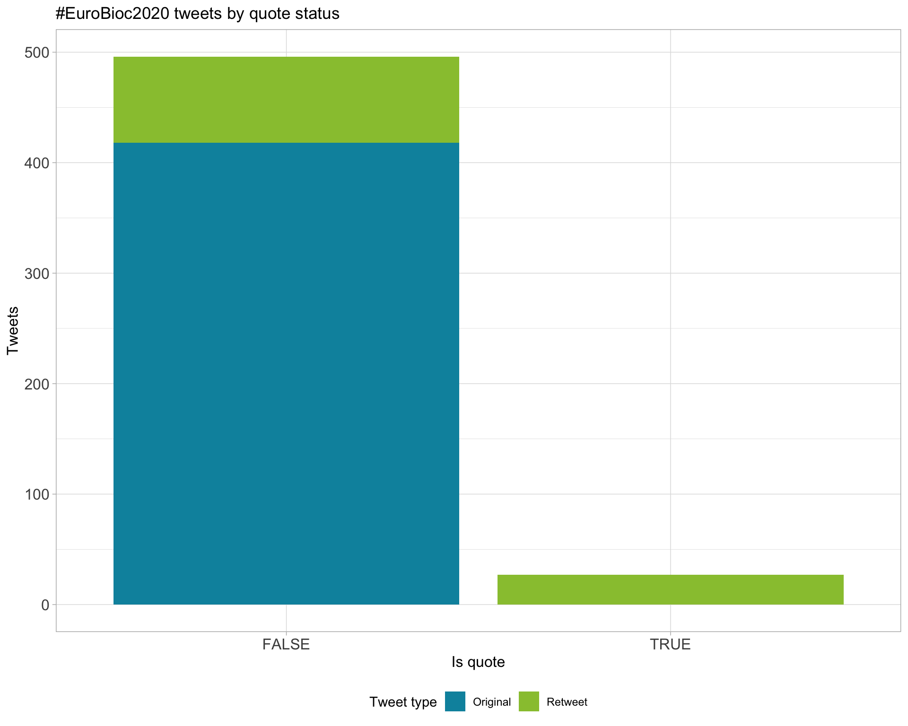
Count
Top 10
| screen_name | text | quote_count |
|---|---|---|
| 29aprilkrutika | annoFuse and shinyFuse at #EuroBioc2020 presented by @FedeBioinfo ‚ú® reach out for a demo or if you have any suggestions.Thanks! https://t.co/mxR3X5u2oR | 2 |
| areyesq | @FedeBioinfo presented two useful tools to call and visualize fusion candidates from RNA-seq data. #EuroBioc2020 https://t.co/6evaUo64aA | 2 |
| drisso1893 | This is amazing! >100 people following interactively two concurrent workshops right now! Thanks so much @seandavis12 for setting this up! And thanks to @KevinRUE67 for coordinating #EuroBioc2020 workshops! https://t.co/odVcypyCiM https://t.co/WkJRprBfk9 | 2 |
| FedeBioinfo | Well thank you @seandavis12 for putting this together and oiling its gears so nicely, also for #EuroBioc2020 ! Amazing setup for teaching üë©‚Äçüè´ü뮂Äçüè´ https://t.co/BkZHHetpId | 2 |
| drisso1893 | Really enjoyed Luke’s keynote! The future of single-cell method development across languages looks bright! #EuroBioc2020 https://t.co/JSU3hlJBG4 | 2 |
| Cramsuig | This talk was one of the highlights for me üòÅü뮂Äçüíª #EuroBioc2020 https://t.co/g07CQhsCXR | 2 |
| mikelove |
This morning at #EuroBioc2020, @areyesq discussing large-scale topological changes seen in colorectal cancer. A careful analysis of a massive amount of multi-omic data. See Alejandro’s thread below from August: https://t.co/pSgSruiOV5 https://t.co/7vTloyZa5l |
1 |
| mikelove |
Today at #EuroBioc2020, first keynote is @BrittaVelten discussing the MEFISTO statistical method for longitudinal / temporal / spatial omics data. It is available in the devel branch of MOFA2 (on Bioc). Thread here: @OliverStegle @RArgelaguet https://t.co/SJoXcBjQIL |
1 |
| LH33837868 | Looking forward to Elyas’s presentation of our proposed framework for geometric deep learning on single cell data at #EuroBioc2020 Wednesday 15:35 CET :) https://t.co/m65vKWf7io | 1 |
| roramirezf94 |
See you in a bit in #EuroBioc2020 This is a collective effort of @saezlab to continue the initial benchmarks of @LuzGarAl and @mr_netherlands on TF activity estimation. Also is one attempt to have an open project where all interested people is invited to contribute :) https://t.co/95uKpwIIR8 |
1 |
Most quoted
6 Media
Proportion
Top 10
| screen_name | text | favorite_count |
|---|---|---|
| saezlab |
Today @roramirezf94 will present in #EuroBioc2020 our latest collective effort: decoupleR, an R package to systematically combine and evaluate regulatory networks and algorithms used for the estimation of TF activities from transcriptomics data. https://t.co/YwS1RNVnir https://t.co/xRc8jdO2LG |
84 |
| seandavis12 |
The workshops at #EuroBioc2020 will be running on a 120-node autoscaling cluster that works out to 480 cores, 23.4TB of shared disk, and 3.7TB of RAM. Everything autoscales (down to zero), so nothing is wasted when not in use. Thx to workshop authors! https://t.co/Uc5JiK2w6g |
71 |
| mikelove | Awesome to see @kwame_forbes presenting his post-bac project at #EuroBioc2020! He is working on functions to help biologists explore their bulk results alongside publicly available and preprocessed scRNA-seq data https://t.co/qzT7NuFP4r | 61 |
| lazappi | “Integrative Analysis of Multiomics Data” @BrittaVelten #EuroBioc2020 #Sketchnotes https://t.co/uugc3y59jd | 53 |
| HeidariElyas |
Looking forward to present #scGCN for the first time in #EuroBioc2020. registered + interested in employing Gene (Regulatory?) Networks as an inductive bias in your single-cell classifiers? join us on 16.12! An exciting collaboration with Shayan Shekarforoosh and @LH33837868. https://t.co/6Uz3QYXKm5 |
47 |
| PardoBree | Today I gave my first talk at a congress in #EuroBioc2020 about our work on adapting the package #spatialLIBD to use VisiumExperiment objects. https://t.co/U23yE32RWM | 46 |
| drisso1893 | Thank you to all #EuroBioc2020 attendees, contributors, and organizers! This was the first time I organized a conference and now that it’s over I can say that it was A LOT of work but 100% worth it! So proud of being part of the amazing @Bioconductor community! https://t.co/HtW3k5aFBF | 45 |
| lazappi | Self #sketchnotes from my #EuroBioc2020 talk https://t.co/dP5uyFa9iX | 41 |
| lazappi | “Large-scale high resolution metagenomics methods, data, infrastructure” with @nsegata #EuroBioc2020 #sketchnotes https://t.co/pUHXIYrVXU | 33 |
| drighelli |
If you‚Äôre interested in discussing Spatial Transcriptomics in Bioconductor join our BoF at 7pm (ITA time) at the #EuroBioc2020. Discover and contribute to our #BiocSpatialChallenges üöÄ With @lmwebr, @CrowellHL and @drisso1893 . https://t.co/tjlx3VUCB7 |
33 |
6.1 Most liked image

7 Tweet text
7.1 Word cloud
The top 100 words used 3 or more times.
7.3 Emojis
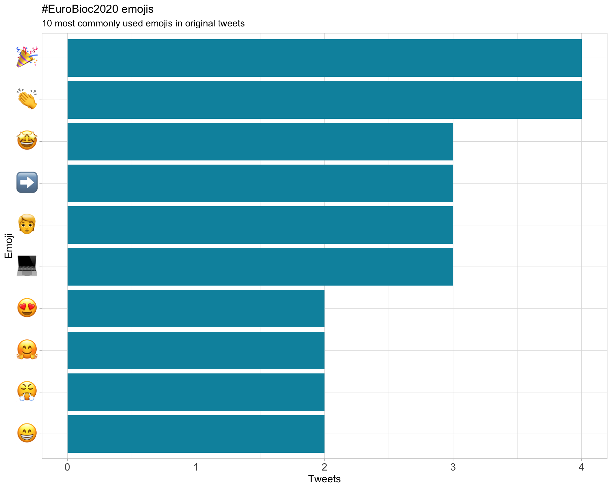
7.4 Bigram graph
Words that were tweeted next to each other at least 3 times.
7.5 Topic modelling
Top 10 words associated with 6 topics identified by LDA.
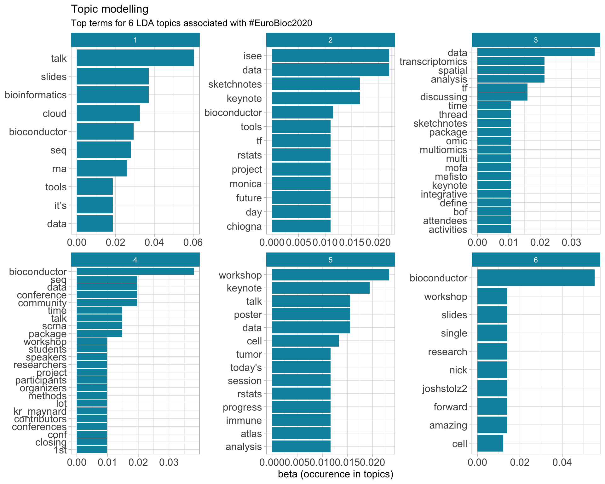
7.5.1 Representative tweets
Most representative tweets for each topic
Topic 1
| screen_name | text | gamma |
|---|---|---|
| polcastellano_ |
ü§îDo you want to know more about statistical analysis tools for #masspec data? I will be presenting the POMA package next Friday 18th at the @Bioconductor European meeting 2020 #EuroBioc2020 ‚û°Ô∏èDon‚Äôt miss it‚ĺÔ∏è #metabolomics #proteomics #bioinformatics @sanplaale @NutriMetabolom |
0.9956115 |
| AedinCulhane |
@lcolladotor adopts old-school tools during a virtual workshop on SPEAQeasy to explain how to identify RNA- DNA sample swaps. #EuroBioc2020 workshops, slides are available from https://t.co/bh3Afbub70 @Bioconductor #rstats https://t.co/dtqsfImOTz |
0.9956115 |
| ascendox |
RT mike_schatz “RT @seandavis12: Slides from the excellent talk from @drsehyun in @LeviWaldron1 group:”Bioinformatics On the Cloud: How to leverage cloud-based resources for your bioinformatics works" #EuroBioc2020 @useAnVIL #bioconductor #cloud #bioi… |
0.9953548 |
| F1000Research | It‚Äôs the last day of #EuroBioc2020 and what a week it‚Äôs been! ü§© You can still submit to the @bioconductor Gateway ‚Äì it‚Äôs the perfect way to maximize the reach & impact of your #bioinformatics research: https://t.co/6y0mt1HXR5 https://t.co/sPOvEqTFKN | 0.9950662 |
| seandavis12 |
Slides from the excellent talk from @drsehyun in @LeviWaldron1 group: “Bioinformatics On the Cloud: How to leverage cloud-based resources for your bioinformatics works” #EuroBioc2020 @useAnVIL #bioconductor #cloud #bioinformatics |
0.9947394 |
| mikhaildozmorov | Very interesting #EuroBioc2020 talk, results, and data resource - Hi-C, HiChIP, ChIP-seq, methylation, RNA-seq in cancer and normal cells (GSE133928) https://t.co/DLzMEZgir8 | 0.9947394 |
| areyesq | Excellent talk by @roramirezf94 on the inference of TF regulators from differentially expressed genes in RNA-seq data. Check out his papers and software! #EuroBioc2020 | 0.9943662 |
| mr_netherlands | Exited to present our functional genomics tools later today at #EuroBioc2020. The talk will be recorded and once it’s uploaded I am happy to share the link for those that are interested but cannot attend https://t.co/2JCMhkRLeu | 0.9939359 |
| drisso1893 | This is amazing! >100 people following interactively two concurrent workshops right now! Thanks so much @seandavis12 for setting this up! And thanks to @KevinRUE67 for coordinating #EuroBioc2020 workshops! https://t.co/odVcypyCiM https://t.co/WkJRprBfk9 | 0.9928429 |
| areyesq | @FedeBioinfo presented two useful tools to call and visualize fusion candidates from RNA-seq data. #EuroBioc2020 https://t.co/6evaUo64aA | 0.9912691 |
Topic 2
| screen_name | text | gamma |
|---|---|---|
| areyesq | @TomSchwarzl shows how DEWseq identifies RNA binding sites from CLIP data that are highly accurate. Ying Chen presents bambu, a package for identification and quantification of isoforms from long read sequencing data. #EuroBioc2020 | 0.9960483 |
| FedeBioinfo | Feels like the Bioinformatics deities heard our prayers and wanted to close the circle: annoFuse is out today! üéâüéâüéâ https://t.co/PwARyIdaXH Nice touch on the timing: collab w @29aprilkrutika & @jolynnerokita started at #Bioc2020, paper‚Äôs out on the first day of #EuroBioc2020 üòç https://t.co/uyPr4aPLdh | 0.9956115 |
| FedeBioinfo |
üéº Oh, the weather outside is frightful But the fire is so delightful And since your data is an SCE Use iSEE, use iSEE, use iSEE üé∂ Want to join the ‚ÄúiSEE Cookbook‚Äù Workshop at #eurobioc2020? Have a look at https://t.co/dju0PBlhYu! h/t @EmilyRiederer for the‚ùÑÔ∏ètrick! https://t.co/ARx2WvmGsU |
0.9953548 |
| drisso1893 | Really excited to kick-off #rstats @Bioconductor’s #EuroBioc2020 virtual meeting in a little more than three hours! The first day is packed with great talks and discussions, including a state-of-the-project address by @mt_morgan and keynote addresses by @hoheyn and @drsehyun | 0.9953548 |
| roramirezf94 |
See you in a bit in #EuroBioc2020 This is a collective effort of @saezlab to continue the initial benchmarks of @LuzGarAl and @mr_netherlands on TF activity estimation. Also is one attempt to have an open project where all interested people is invited to contribute :) https://t.co/95uKpwIIR8 |
0.9950662 |
| saezlab | As our second contribution to #EuroBioc2020, @mr_netherlands will present today our transcription factor (TF) and pathway analysis tools dorothea (https://t.co/Z2V6XUvhV2) and progeny (https://t.co/smEWPf13Zj), which are both available as BioConductor packages. https://t.co/KGfqCr5PxS | 0.9943662 |
| drisso1893 | I may be biased but I’m really enjoying the keynote by Monica Chiogna at #EuroBioc2020, a great overview of how to use graphical models to learn biological relations among genes! https://t.co/vl73S0qn6U | 0.9939359 |
| DiBio_UniPD |
Thanks to all the @Bioconductor #rstats #EuroBioc2020 community for the great international event. Hope to see you all in person in our beautiful @UniPadova for an another future edition! Ciao üëã |
0.9934346 |
| lazappi |
Links to Theis lab tools I mentioned: zellkonverter https://t.co/KuwhAQwtTp scVelo https://t.co/tuFAHqvkot CellRank https://t.co/3EgJDrgtdk #EuroBioc2020 |
0.9928429 |
| lazappi | Final #EuroBioc2020 keynote from @henrikbengtsson "future: simple, extendable, generic framework for parallel processing #sketchnotes https://t.co/RX36CqZXS7 | 0.9928429 |
Topic 3
| screen_name | text | gamma |
|---|---|---|
| mikelove |
Today at #EuroBioc2020, first keynote is @BrittaVelten discussing the MEFISTO statistical method for longitudinal / temporal / spatial omics data. It is available in the devel branch of MOFA2 (on Bioc). Thread here: @OliverStegle @RArgelaguet https://t.co/SJoXcBjQIL |
0.9956115 |
| mikelove |
This morning at #EuroBioc2020, @areyesq discussing large-scale topological changes seen in colorectal cancer. A careful analysis of a massive amount of multi-omic data. See Alejandro’s thread below from August: https://t.co/pSgSruiOV5 https://t.co/7vTloyZa5l |
0.9956115 |
| nickolauschat |
@marcorubio This should be making #cryptocurrencies skyrocket in my humble and biased opinion. Banks seem a lot less dependable these days, but I guess crypto exchanges perhaps have similar security holes. #Bitcoin #EuroBioc2020 #TMCFailCard |
0.9956115 |
| roramirezf94 |
Today in #EuroBioc2020 @mr_netherlands will present part of our toolbox for functional transcriptomics. @ItaiYanai mentions in https://t.co/2RJ2JYX3VM that TF expression could be used to define cell lineages from scell data. Maybe TF activities could define them better. :) https://t.co/q8rlV0IxcW |
0.9953548 |
| saezlab |
Today @roramirezf94 will present in #EuroBioc2020 our latest collective effort: decoupleR, an R package to systematically combine and evaluate regulatory networks and algorithms used for the estimation of TF activities from transcriptomics data. https://t.co/YwS1RNVnir https://t.co/xRc8jdO2LG |
0.9953548 |
| roramirezf94 |
@BrittaVelten giving a great guided tour on multiomics analysis (MOFA, MOFA+, MEFISTO, and graper) in #EuroBioc2020 . As a huge fan boy of these approaches I can‚Äôt recommend them enough! üëèüëè https://t.co/MovpEAjntH |
0.9947394 |
| drighelli |
If you‚Äôre interested in discussing Spatial Transcriptomics in Bioconductor join our BoF at 7pm (ITA time) at the #EuroBioc2020. Discover and contribute to our #BiocSpatialChallenges üöÄ With @lmwebr, @CrowellHL and @drisso1893 . https://t.co/tjlx3VUCB7 |
0.9939359 |
| drisso1893 | TFW you spend 10 months organizing a conference and the only thing that you did not consider is Google being down preventing your attendees to sign onto the platform! #googledown #disasteraverted #EuroBioc2020 | 0.9934346 |
| drighelli | Thanks to all the attendees of this [first?] BoF on Spatial Transcriptomics at #EuroBioc2020! Lots of things to think about and to put together! Special thanks to @CrowellHL and @lmwebr for all the thoughts, the ideas and the work put into this! Wait for our #Spatial Workshop! https://t.co/hvCjJZITDP | 0.9928429 |
| antagomir | A super interesting keynote on integrative analysis of multi-omic data with probabilistic techniques by @BrittaVelten in #EuroBioc2020 ! | 0.9912691 |
Topic 4
| screen_name | text | gamma |
|---|---|---|
| lcolladotor |
Congrats Louise @lahuuki on your 1st conf talk ^^ It‚Äôs been fun working with you deconvoluting #RNAseq data using the cell types @mattntran @kr_maynard et al identified using #snRNAseq It‚Äôs great to see 1st time speakers at #EuroBioc2020 Thx for organizing an inclusive conf! üíØ https://t.co/zX4dtALh6Y |
0.9965616 |
| areyesq | 400 participants at this year’s #EuroBioc2020! A lesson learned from the current pandemic is that we can transmit conferences live to make them more accessible to everyone. I’m sure researchers and students with limited funds to attend conferences are happy about this. https://t.co/QisVtFlYZj | 0.9956115 |
| gbrlesales | Closing remarks at #EuroBioc2020. 49 speakers, 7 keynotes, 12 workshops and 400 participants. Another fantastic example of open science and great community building! @Bioconductor #rstats @DiBio_UniPD @UniPadova #bioinformatics #singlecell #Statistics #metagenomics #proteomics | 0.9956115 |
| F1000Research | Calling all @Bioconductor researchers: #EuroBioc2020 is about to start! ü•≥ Visit our virtual booth this week for a chat about all things #OpenScience with the lovely @j_ellina. She might even offer you 10% off the APC for your next #SoftwareTool Article‚Ķhttps://t.co/s0NuO3git8 https://t.co/UbXCrlorE4 | 0.9953548 |
| mikelove | Awesome to see @kwame_forbes presenting his post-bac project at #EuroBioc2020! He is working on functions to help biologists explore their bulk results alongside publicly available and preprocessed scRNA-seq data https://t.co/qzT7NuFP4r | 0.9950662 |
| FedeBioinfo |
This sweet idea is a tribute to my good conference pal @rabaath - I‚Äôll never forget his workshop #useR2015 in Aalborg, what a hygge feeling it was to be there ü§ó Link to the #EuroBioc2020 rules: https://t.co/ayxdaP0hP9 https://t.co/FPGpVFFtrU |
0.9947394 |
| c_vanderaa | Very nice workshop at #EuroBioc2020 where you can learn how to look interactively at your scRNA-Seq data in no time! #iCOOKwithiSEE üßë‚Äçüç≥ I definitely recommend the iSEE Bioconductor package üëå https://t.co/1QeF2omXxm https://t.co/lZ8YFCED1u | 0.9947394 |
| drisso1893 | Thank you to all #EuroBioc2020 attendees, contributors, and organizers! This was the first time I organized a conference and now that it’s over I can say that it was A LOT of work but 100% worth it! So proud of being part of the amazing @Bioconductor community! https://t.co/HtW3k5aFBF | 0.9943662 |
| abspangler | Today I gave my first conference talk at #EuroBioc2020 about our work on Spatial RNA-Seq on Human Locus Coeruleus. Thank you so much for all the help and support I received from: @lcolladotor @martinowk @lmwebr @stephaniehicks @kr_maynard https://t.co/Ao9Vk4r1lL | 0.9943662 |
| LabRomualdi | Great talks today at #EuroBioc2020 of our former students on SourceSet @Bioconductor package by Elisa Salviato and inferential methods for metagenomic data by @CalgaroMatteo Congratulation ! | 0.9939359 |
Topic 5
| screen_name | text | gamma |
|---|---|---|
| FedeBioinfo | We love to see your progress with iSEE in today‚Äôs workshop at #EuroBioc2020, so we encourage you to reply or retweet some screenshots of the app you just created, using the #iCOOKwithiSEE tag! We‚Äôll use them to extract our lucky winner for a DIY t-SNE kit (+ holo stickersüòç)! https://t.co/Pyrdc22F4W | 0.9964060 |
| hoheyn |
Thanks @_lazappi_ ! It was a pleasure kicking off keynote lectures at #EuroBioc2020. Thanks so much @drisso1893 and @Bioconductor team for the invitation. Links to @biorxivpreprint publications: SPOTlight: https://t.co/2kHodcwrRw Tumor Immune Cell Atlas: https://t.co/Cps9OY6QuH https://t.co/7xMnxBn3As |
0.9956115 |
| seandavis12 |
The workshops at #EuroBioc2020 will be running on a 120-node autoscaling cluster that works out to 480 cores, 23.4TB of shared disk, and 3.7TB of RAM. Everything autoscales (down to zero), so nothing is wasted when not in use. Thx to workshop authors! https://t.co/Uc5JiK2w6g |
0.9956115 |
| areyesq | One of today’s keynote at #EuroBioc2020 is @Elsa2Bernard. She is showing how mutational and clonality patterns are correlated with TP53 allelic states in AML. Allelic status of TP53 is also indicative of prognosis and treatment response. | 0.9950662 |
| c_vanderaa | Excited to present my latest progress on developing a computational framework for mass spectrometry-based #singlecell #proteomics data analysis üòú See you today at 16.05 (CET) at the #EuroBioc2020 ! Meanwhile, you can have a look at the slides here https://t.co/ux3JJ9qqRw | 0.9950662 |
| jo_rainer |
In my workshop at #EuroBioc2020 (Thursday) I will show how our #Spectra package can be used to compare experimental MS2 spectra to #MassBank - all from within #rstats. Hope to see you there! Workshop, docker image etc available here: https://t.co/ejj1kK7eAw |
0.9947394 |
| lcolladotor |
Congrats @PardoBree on your first talk at a conf ^^ Your future is looking bright üåü Thanks again for all your hard work üò§ on #spatialLIBD. Recruiting you was one of the highlights from teaching at @lcgunam üá≤üáΩ earlier in the year #rstats #EuroBioc2020 https://t.co/k4h3SQPp0F https://t.co/Vd6nv5XaFb |
0.9947394 |
| LabRomualdi | Fantastic Keynote today at #EuroBioc2020 by @hoheyn on “Spatially resolved tumor immune cell atlas”. Impressive work, wonderful data from the @humancellatlas project. https://t.co/sNzuI2p0Ed | 0.9943662 |
| henrikbengtsson |
Wow, I‚Äôm impressed. You capture the essence of my {future} talk perfectly - much better than I could ever do myself ‚Ķ and you did it so quickly (maybe even before the end of the session?) Beautiful. Thank you üôè #EuroBioc2020 #RStats #parallel https://t.co/9PqZVyFB6u |
0.9939359 |
| antagomir | Rethinking the microbiome research ecosystem in R/Bioc - check the poster at @F1000 / #EuroBioc2020 https://t.co/0PItS1vzRg /w @dombraccia @fionarhuang @gutmicrobe @hcorrada FelixErnst & others | 0.9934346 |
Topic 6
| screen_name | text | gamma |
|---|---|---|
| F1000Research | Hands up if you‚Äôre attending #EuroBioc2020 this week! üôã We‚Äôre excited to sponsor this conference about all the amazing @bioconductor research. Don‚Äôt forget to submit your research, slides & posters to the #Bioconductor Gateway: https://t.co/Vkp6WlsYMD https://t.co/qtJcDVDD39 | 0.9962356 |
| HeidariElyas |
Looking forward to present #scGCN for the first time in #EuroBioc2020. registered + interested in employing Gene (Regulatory?) Networks as an inductive bias in your single-cell classifiers? join us on 16.12! An exciting collaboration with Shayan Shekarforoosh and @LH33837868. https://t.co/6Uz3QYXKm5 |
0.9960483 |
| lcolladotor |
Thanks everyone who joined Nick Eagles https://t.co/O3u5XRPXy2 Josh Stolz @JoshStolz2 and I for our workshop on how to use #SPEAQeasy to process your bulk #RNAseq data & analyze the output with @Bioconductor üíª https://t.co/EW4SV7wbqm üìú https://t.co/zKuBRtBCmY #EuroBioc2020 https://t.co/tnjTY3EP5V |
0.9958414 |
| DiBio_UniPD |
Kick-off of the #rstats @Bioconductor #EuroBioc2020! Thanks to all organizers!! Proud to be part of this amazing international event thanks to @labRomualdi and Gabriele Sales üëèüëè@DiBio_UniPD #science #innovation #research #bioinformatics #singlecell #computationalBiology https://t.co/eikCp9i0Hw |
0.9953548 |
| JonathanGoeke | @StevenSalzberg1 @NiranjanTW @Bioconductor @chenyin76951822 StringTie2 is fantastic for transcript discovery btw, and an amazingly efficient implementation! It was also featured in Chen Ying’s talk and poster at #EuroBioc2020 | 0.9950662 |
| LH33837868 | Looking forward to Elyas’s presentation of our proposed framework for geometric deep learning on single cell data at #EuroBioc2020 Wednesday 15:35 CET :) https://t.co/m65vKWf7io | 0.9943662 |
| lcolladotor |
Next up, Nick & @JoshStolz2 will teach a workshop on how to use it at #EuroBioc2020 next week I also bet that you‚Äôll see Nick‚Äôs name around more frequently. He‚Äôs just getting started ;) The first paper is always the hardest üò§ |
0.9939359 |
| F1000Research | Hey #EuroBioc2020 – have you visited the @bioconductor Gateway yet? This dedicated hub on @F1000Research is packed with articles about #Bioconductor (all fully open, of course!) Check it out ➡️ https://t.co/Vkp6WlsYMD https://t.co/cJ3DYZtl9Z | 0.9934346 |
| drisso1893 | Day 1 of #EuroBioc2020 is over! It’s great to see such a diverse set of speakers from all stages of career share their work! Tired but happy! See you all tomorrow at 2pm! | 0.9928429 |
| lcolladotor | Thanks again #EuroBioc2020 for providing junior members an opportunity to present their work! We had four first time presenters from @LieberInstitute: @PardoBree @lahuuki Nick Eagles @abspangler (with Josh @JoshStolz2 an almost 5th) üôåüèΩüòÅ | 0.9928429 |
8 Links
Links to GitHub, GitLab, BitBucket, Bioconductor or CRAN mentioned in Tweets.
| Name | Tweets | Retweets | Type | Link |
|---|---|---|---|---|
| zellkonverter.html | 1 | 5 | Bioc | bioconductor.org/packages/zellkonverter.html |
| Spectra | 1 | 4 | Bioc | bioconductor.org/packages/Spectra |
| prolfqua | 1 | 2 | GitHub | wolski/prolfqua |
| annoFuse | 1 | 0 | GitHub | d3b-center/annofuse |
| bambu | 1 | 0 | Bioc | bioconductor.org/packages/bambu |
| decoupleR | 1 | 0 | GitHub | saezlab/decoupler/ |
| zellkonverter | 1 | 0 | Bioc | bioconductor.org/packages/zellkonverter |
Session info
## R version 4.0.0 (2020-04-24)
## Platform: x86_64-apple-darwin17.0 (64-bit)
## Running under: macOS Catalina 10.15.7
##
## Matrix products: default
## BLAS: /Library/Frameworks/R.framework/Versions/4.0/Resources/lib/libRblas.dylib
## LAPACK: /Library/Frameworks/R.framework/Versions/4.0/Resources/lib/libRlapack.dylib
##
## locale:
## [1] en_US.UTF-8/en_US.UTF-8/en_US.UTF-8/C/en_US.UTF-8/en_US.UTF-8
##
## attached base packages:
## [1] stats graphics grDevices utils datasets methods base
##
## other attached packages:
## [1] fs_1.5.0 here_0.1 kableExtra_1.3.1 knitr_1.30
## [5] magick_2.5.2 webshot_0.5.2 viridis_0.5.1 viridisLite_0.3.0
## [9] wordcloud_2.6 RColorBrewer_1.1-2 ggtext_0.1.0 ggraph_2.0.3
## [13] ggrepel_0.8.2 ggplot2_3.3.2 emo_0.0.0.9000 rvest_0.3.6
## [17] xml2_1.3.2 topicmodels_0.2-11 tidytext_0.2.6 igraph_1.2.6
## [21] stringr_1.4.0 purrr_0.3.4 forcats_0.5.0 lubridate_1.7.9.2
## [25] tidyr_1.1.2 dplyr_1.0.2 rtweet_0.7.0 clamour_0.1.0
##
## loaded via a namespace (and not attached):
## [1] bitops_1.0-6 usethis_1.6.3 httr_1.4.2 rprojroot_2.0.2
## [5] SnowballC_0.7.0 tools_4.0.0 utf8_1.1.4 R6_2.5.0
## [9] colorspace_2.0-0 withr_2.3.0 tidyselect_1.1.0 gridExtra_2.3
## [13] processx_3.4.4 curl_4.3 compiler_4.0.0 cli_2.2.0
## [17] NLP_0.2-1 labeling_0.4.2 slam_0.1-47 scales_1.1.1
## [21] tm_0.7-7 callr_3.5.1 askpass_1.1 digest_0.6.27
## [25] rmarkdown_2.5 pkgconfig_2.0.3 htmltools_0.5.0 highr_0.8
## [29] rlang_0.4.8 rstudioapi_0.13 farver_2.0.3 generics_0.1.0
## [33] jsonlite_1.7.1 tokenizers_0.2.1 RCurl_1.98-1.2 magrittr_2.0.1
## [37] modeltools_0.2-23 Matrix_1.2-18 Rcpp_1.0.5 munsell_0.5.0
## [41] fansi_0.4.1 lifecycle_0.2.0 stringi_1.5.3 yaml_2.2.1
## [45] MASS_7.3-53 plyr_1.8.6 grid_4.0.0 parallel_4.0.0
## [49] crayon_1.3.4 lattice_0.20-41 graphlayouts_0.7.1 gridtext_0.1.1
## [53] ps_1.4.0 pillar_1.4.7 markdown_1.1 reshape2_1.4.4
## [57] stats4_4.0.0 glue_1.4.2 evaluate_0.14 vctrs_0.3.5
## [61] png_0.1-7 tweenr_1.0.1 selectr_0.4-2 gtable_0.3.0
## [65] openssl_1.4.3 polyclip_1.10-0 assertthat_0.2.1 xfun_0.19
## [69] ggforce_0.3.2 tidygraph_1.2.0 janeaustenr_0.1.5 tibble_3.0.4
## [73] ellipsis_0.3.1